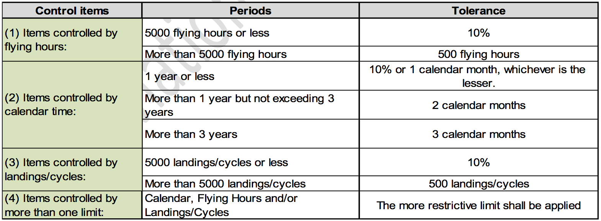
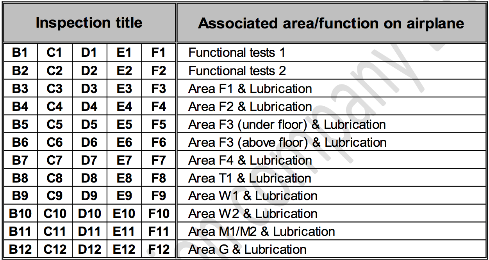

{kind=link}
Introduction¶
Information¶
Note
Throughout this Aircraft Flexible Maintenance Schedule where Hawker 800XP is referenced, the designation of Hawker 850XP equally applies.
Note
The airplane illustrations throughout this Aircraft Flexible Maintenance Schedule may appear without winglets. These illustrations also apply to airplanes equipped with winglets, even though the winglets are not shown.
A. General¶
It shall be the responsibility of AC AVIATION company to ensure that the latest revision of the publications referenced in this schedule are utilized during operation, servicing and maintenance of the airplane.
B. Warnings, Cautions and Notes¶
Warning
Brings attention to an operating procedure, inspection or maintenance practice, which if not correctly followed, could result in personal injury or loss of life.
Caution
Brings attention to an operating procedure, inspection, repair or maintenance condition, which if not strictly observed, could result in damage or destruction of equipment.
Note
Brings attention to an operating procedure, inspection, repair or maintenance condition, which is essential to highlight.
C. Special Conditions Cautionary Notice¶
Airplanes operated for Air Taxi, or other than normal operation, and airplanes operated in humid tropics, cold and damp climates, etc., may need more frequent inspections for wear, corrosion and/or lack of lubrication. Under these adverse conditions, perform periodic inspections in compliance with this guide at more frequent intervals until the owner or operator can set his own inspection periods based on the contingencies of field experience.
Caution
The recommended periods do not constitute a guarantee the item will reach the period without malfunction as the aforementioned factors cannot be controlled by the manufacturer.
D. Schedule Layout¶
Title page¶
A Title page is located at the beginning of the schedule and provides the part number of the schedule, and instruction data. Information throughout this schedule is applicable to all models listed on the title page except where specifically stated.
The printed schedule will have a Record of Revisions page. The Record of Revisions is provided following the Current LOEP List. When a revision is inserted, the revision number, the date the revision is inserted into the schedule, and the initials of the person(s) inserting the revision should be recorded on this page and in the Section 1 (1.4 Record Of Revision)
ATA Task Codes¶
This section lists the individual tasks contained in the schedule in ATA order.
E. How To Use The Schedule¶
The intent of this Maintenance Program is to provide AC AVIATION Company with the option of selecting the maintenance plan best suited to their own flying schedule. The charts shown in Figure 1 and Figure 2 are used in selecting the inspection method chosen.
Note
For composition of schedules and breakdown refer to paragraphs 3 and 4.
It is the responsibility of AC AVIATION Company, those subsequent maintenance recommendations, including airworthiness information promulgated in Service Bulletins, Service Letters, etc., issued by the constructors and vendors should be evaluated and, where appropriate, should be incorporated in this Schedule by the approved amendment procedures.
The requirements of this Schedule shall normally be implemented at or before the periods specified. Extensions to prescribed periods are subject to agreement with the CAAT and should be made only when the periods cannot be complied with due to circumstances which could not have been reasonably foreseen by AC AVIATION Company or by AC AVIATION Company’ contracted Maintenance Organization.
Maintenance Start Data¶
All the tasks in the Out of Phase, Component Requirements and Airworthiness Limitations Document (ALD) are calculated as starting from the date of original certification (issuance of original standard airworthiness certificate) or from component installation during completion. CAAT or applicable regulatory required inspections and maintenance must be done in accordance with specific regulatory requirements. All Hawker Beechcraft Corporation recommended inspections, maintenance and servicing shall be based on the date of release for service following aircraft completion. These statements are not applicable to the airplane engines or the APU, which must be maintained in accordance with their own manufacturers, recommended or required maintenance instructions.
The airplane must be maintained in accordance with the Maintenance Schedule based on original certification during completion. Both a 400 hour Detailed Walk-Around Inspection and 12 month (E Inspection) are required at the time of completion if the difference between the date of original certification and completion is more than six months or if the airplane has more than 50 hours total flight time.
Any variation to the inspection must be approved by CAAT.
Note
The requirements referred to in this Maintenance Schedule are applicable to equipment installed to Hawker Beechcraft Corporation and Hawker Beechcraft Corporation Completion Center approved modifications. For airplanes with equipment installed to any other FAA approved modifications refer, to that particular Design Authority responsible for the installation. Refer to the relevant Vendor Publication for any Servicing/Maintenance instructions which are not specifically defined in this schedule.
Factory Aircraft Comprehensive Tracking System (FACTS) program is the factory authorized computerized maintenance tracking and forecasting system that adheres to the guideline established in this maintenance schedule.
Periods And Tolerances¶
A. General Instructions¶
- Flying Times
All periods quoted in the Schedule in ‘flying hours’ are based on flight (take-off to touch-down) times. Where, due to airport congestion, block (chock-to-chock) times exceed flight times by an average of more than 20 per cent, corresponding adjustments should be made to the overhaul periods of selected components such as starter/generators, hydraulic pumps and cut-out valves.
- Fatigue Lives and Mandatory Limitations
ALL registered airplanes must comply with the requirements of CAAT
All other life limitations classified as mandatory by the constructor/manufacturer must also be observed unless varied by CAAT.
The Structural Inspection frequencies quoted in this Schedule are based on a set of assumed typical operating conditions. These assumptions take into account the experience obtained in service with the earlier variants of airplanes together with the enhanced capabilities of the Hawker 800XP Aircraft.
The projected utilization has been described in the form of Flight Plans or Mission Profiles; whilst these have been invested with a degree of conservatism it is not possible for AC AVIATION Company to make sure that they will cover every airplane in service.
Should the actual utilization differ significantly from the assumed mission profiles then due allowance must be made for the effects on the structural damage tolerance and fatigue characteristics and, hence, the inspection and replacement schedules.
For the purposes of compiling the Structural Inspection frequencies the typical mission profiles allow for:
- One cabin pressurization to full differential (8.55 psi).
- One full cycle of flap operation (take-off and landing).
- One full undercarriage cycle including braked, full stop landing per flight where a flight is defined as a single completed take-off and landing sequence. Touch and go landings, or rollers, are considered to be equivalent to full stop landings for maintenance purposes.
It is also assumed that the majority of flights are at altitudes of 25,000 feet and above using normal climb and descent procedures, with an allowance for flights at lower altitudes. The rate of fatigue damage to the structure could be greater than predicted for the assumed typical utilization if more than 30% of the flights involve cruises at altitudes below 15,000 feet or if less than 70% of the flights involve cruises at or above 25,000 feet.
The assumed typical block time for average flights is 1.5 hours. Fatigue damage per flight could be increased if on average, more than 70% of flights are of a longer duration.
If AC AVIATION Company finds that the utilization of their aircraft differ from the average conditions outlined above should contact Hawker Beechcraft Corporation for guidance.
In order to fully describe AC AVIATION Company particular usage of our airplane the following information is required:
- Stage length and block time
- Climb time and speed
- Cruise time, altitude and speed
- Descent time and speed
- Stand-off time, altitude and speed
- Number of pressurizations and differential
- Number of flap operation cycles
- Number of undercarriage operation cycles
- Number of missed approaches
- Number of touch-and-go landings (rollers)
- Taxi time (pre- and post-flight)
- Typical zero fuel weight
- Typical landing weight
- Percentage of total flights flown to this mission profile.
Note
If the airplane carries out widely differing types of operation these should be divided into groups of similar profiles each of which require the above data.
Other general information to be advised as follows:
- Airplane registration
- Airplane serial number
- Airplane series
- Total flying hours and landings (including touch-and-go landings)
- Hours and landings flown in the described flight profile(s)
- Geographical disposition of operations.
- Overhaul Periods - Radio and Radar Equipment Subject to negotiation with the CAAT, radio and radar equipment listed in the servicing of this Maintenance Schedule may be maintained on an “On Condition” basis.
- Date Marking of Equipment Equipment which is required to be date marked after inspection or re-test to comply with this Schedule, should be re-marked with the date at which the next inspection or test is due.
B. Tolerances¶
Each inspection has a period for accomplishment, that period is the tolerance window. A tolerance window is defined as the period that an inspection may be accomplished, and does not change the next due time. The tolerance window for each inspection is specified in paragraph 4.A.
However AC AVIATION Company will never use these Tolerances unless otherwise approved by CAAT in the time-by-time of inspections.
C. Structural Inspection and Out of Phase Inspection Tolerances¶
{kind=link}
Note
Subsequent periodic requirements must be accomplished based on the original cycle or actual completion Hour/Date/Cycles, whichever is the more restrictive.
Note
These tolerance periods DO NOT apply to Chapter 49 items that are controlled by APU running hours. Note: These tolerance periods DO NOT apply to Part 2, Routine Inspections.
Note
These tolerance periods DO NOT apply to Component Requirements and Mandatory Lives.
Composition Of Schedule And Task Numbering¶
A. Composition of Schedule¶
The Schedule is composed of nine parts, namely:
Part 1...Minor inspections (Pre-Flight, Post Flight, 200 and 400 Hour Lubrication and 400 Hour Detailed Walk- Around Inspection).
Note
Pre-Flight and Post Flight inspections are covered in the Hawker 800XP Ground Handling Checklist P/N 140-590032-0025.
Note
Reference is also made in Part 1 to Engine, APU, Thrust Reverser and Airbrake Selector Lever Baulk Inspections.
Part 2...Routine Inspections (Inspection “B”, Inspection “C”, Inspection “D”, Inspection “E”, Inspection “F” and Inspection “G”).
Part 3...Structural Inspections.
Part 4...Out of Phase Inspections. Part 5...Special Incident Inspections. Part 6...Panel Location Charts.
Part 7...Lubrication.
Part 8...Component Requirements. Part 9...Mandatory Life Limitations
B. Task Numbering¶
Each individual task within parts 1, 2, 3 and 4 has its own unique task number, consisting of six digits. The first two digits relate directly to the ATA chapter number and the last four digits relate to the task, e.g. 270025 is the 25th task in Chapter 27, Flight Controls.
For recording requirements each minor and routine inspection period has a unique ATA Chapter 05 code number Area inspections within the routine inspections are also given a unique code number. These are 05**** numbers and will follow the unique number allocated to the inspection, e.g. the inspection number for Inspection B3 is 050140, therefore the area inspection number will be 050141.
The first page of each group of routine inspections consists of the following:
- The relevant inspection title (e.g. Inspection “B3”)
- The unique code number mentioned above (e.g. 050140)
- List of Effective Pages
- Instructional Data Block
- Completion of Inspection Block
Inspection Periods¶
Note
If an inspection is done within the tolerance window, the time when the inspection is next due is not changed.
Note
Minor Inspections that are divided into individual task codes so they can be used for scheduling and tracking, can be phased similar to Part 2. Routine Inspections, providing each task does not exceed the inspection period or tolerance window, (Example: If Item J. Rear Equipment Bay inspection in the 400 Hour Detailed Walk-Around has a task code assigned then the entire “Item J” could be scheduled and completed at the same time as “Inspection B7 - Rear Equipment Bay and Rear Fuselage inspection”).
A. General¶
Firstly AC AVIATION Company Limited have chosen to complied with the un-phased inspection method and may be change to the Phased formatting in the future for fit with the Aircraft fleet mission.
- 200 Hour lubrication - 200 flying hour interval with 50 flying hour tolerance window (191 to 240).
- 400 Hour lubrication - 400 flying hour interval with 50 flying hour tolerance window (391 to 440).
- 400 Hour Detailed Walk-Around inspection has a 400 flying hour interval with a 50 flying hour tolerance window (391 to 440).
- Airbrake Selector Lever Baulk inspection has a 400 flying hour interval with a 50 flying hour tolerance window (391 to 440).
When an inspection group is not phased:
- Inspection group “B” has a 800 flying hour interval with a 50 flying hour tolerance window (791 to 840).
- Inspection group “C” has a 1600 flying hour interval with a 100 flying hour tolerance window (1551 to 1650).
- Inspection group “D” has a 3200 flying hour interval with a 200 flying hour tolerance window (3151 to 3350).
- Inspection group “E” has a 12 month interval with a +/-1 calendar month tolerance window (11 month to 13 month).
- Inspection group “F” has a 24 month interval with a +/-2 calendar month tolerance window (22 month to 26 month).
- Inspection “G” has a 48 month interval with a +/-2 calendar month tolerance window (46 month to 50 month).
- When a task or inspection item in an inspection is started, the airplane MUST NOT be flown until the task or inspection item is completed and the aircraft has been approved for return to service in accordance with the requirements of the CAAT.
Note
Assure that the task or inspection item performed is signed off in such a manner that clearly indicates when the inspection tasks are completed.
- Multiple inspections (e.g. B1 through B12) may be accomplished within the same tolerance window, however each inspection is individually tracked.
- Each inspection remains current, when completed, until, at a maximum, the last day or flying hour of the next allocated period for the identical inspection.
- Never exceed the allowed inspection window for a task when changing formats from phased to un-phased; or from un-phased to phased.
B. There is no Inspection group A¶
Instead, there is a 400 Hour Detailed Walk- Around inspection.
C. The breakdown of Inspection¶
Groups “B”, “C”, “D”, “E” and “F” and the areas dealt with in the inspections are listed below.
{kind=link}
D. Flexible Maintenance Charts (Figure 1. and Figure 2)¶
The charts layout the inspections in hours (Figure 1) and months (Figure 2) with 12 columns for Inspection groups “B”, “C”, “D”, “E” and “F”. Inspection “G” only has one column. For the conventional inspection method an X would be placed in each column at the interval for that inspection, refer to Introduction - Appendix Chart 1 (Sheets 1 and 2) for example. This would be done for each of the six inspections, B through G.
The flexible or progressive inspection method uses the same charts with X’s placed in each column at the time selected. The X represents that time when each inspection would be done. Appendix Chart 2 (Sheets 1 to 4) show one example of this method.
Note
The charts are designed to provide maximum flexibility such as doing any individual B through F inspection in a packaged method, while doing other inspections at one time. An example of this would be to do Inspection groups B and C in packages and all other inspections at one time.
Note
The appendix charts are provided as examples of the most commonly used inspection methods.
{kind=link}